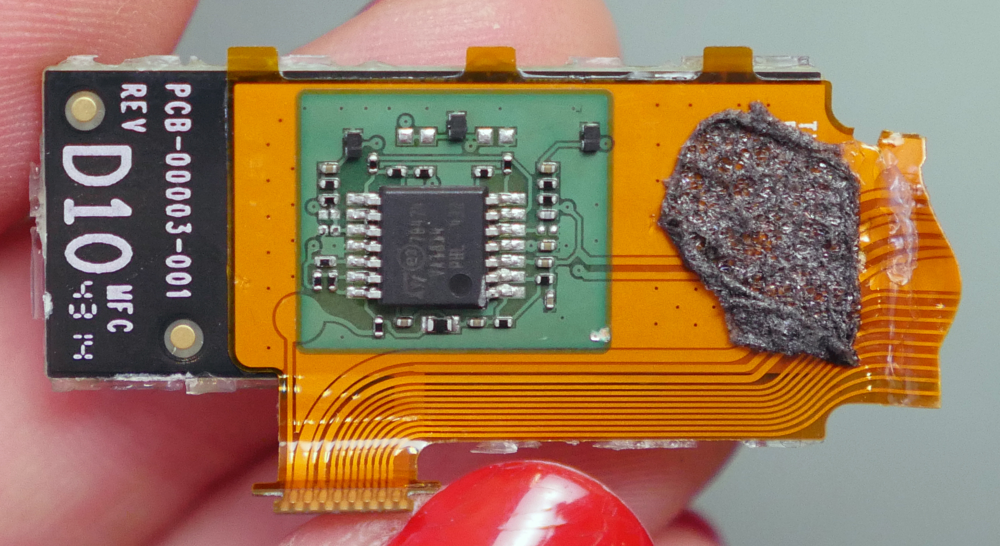

Myo Armband
Jaume Gasa Gómez
Quién es este tio
- Jaume Gasa
- Grado en Ingeniería Informática
- Actualmente en el Máster de Automática y Robótica
- Contacto
- correo: ua.jaume@gmail.com
- telegram: @jaume-gasa
- Python Alicante
- Telegram y Twitter: @python_alc
- Python España
- Telegram: @PythonEsp
- Twitter: @python_es
- PyConES 2017, 22 al 24 de septiembre en Cáceres
Índice
- Características técnicas
- Inside the magic
- Clasificación de señales EMG
- Conclusiones
Características Técnicas

- 8 sensores EMG
- Microcontrolador Kinetis K22
- Unidad de medición inercial (IMU) NRF51822
- Acelerómetro
- Giroscopio
- Magnetómetro
- Bluetooth NRF51822
- Batería recargable
Precio: $199 + gastos de envío
Inside the magic
Figura por Becky Stern. [CC BY-SA 3.0]Inside the magic (II)
Placa de circutio impreso
Figuras por Becky Stern. [CC BY-SA 3.0]
Inside the magic (III)
Módulo EMG
 Figura por Becky Stern. [CC BY-SA 3.0]Inside the magic (III)
Batería
Figura por Becky Stern. [CC BY-SA 3.0]Qué proyectos usan Myo Armband
Control de prótesis
Qué proyectos usan Myo Armband
¡Drones!
¡Genial! Por dónde empiezo a programar
Dos opciones:
It's adventure demo time

¡ Esto es todo !